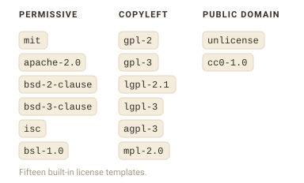
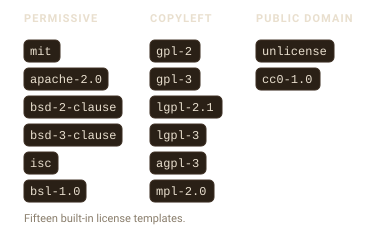
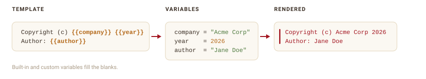
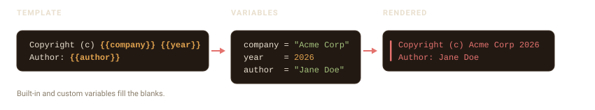

stamp_templates()
#> [1] "agpl-3" "apache-2.0" "bsd-2-clause" "bsd-3-clause" "bsl-1.0"
#> [6] "cc0-1.0" "default" "gpl-2" "gpl-3" "isc"
#> [11] "lgpl-2.1" "lgpl-3" "mit" "mpl-2.0" "unlicense"A template decides what your header says. filestamp ships with templates for the most common licenses, and you can write your own.
Built-in license templates
filestamp includes fifteen license templates, grouped by how permissive they are. Each one reproduces the canonical license text, with your copyright and author filled in.


List them with stamp_templates():
Stamp a file with one by passing its name to template:
f <- tempfile(fileext = ".R")
writeLines("x <- 1", f)
stamp_file(f, template = "mit", author = "Jane Doe")
cat(readLines(f), sep = "\n")
#> # MIT License
#> #
#> # Copyright (c) Acme Corp 2026
#> #
#> # Permission is hereby granted, free of charge, to any person obtaining a copy
#> # of this software and associated documentation files (the "Software"), to deal
#> # in the Software without restriction, including without limitation the rights
#> # to use, copy, modify, merge, publish, distribute, sublicense, and/or sell
#> # copies of the Software, and to permit persons to whom the Software is
#> # furnished to do so, subject to the following conditions:
#> #
#> # The above copyright notice and this permission notice shall be included in all
#> # copies or substantial portions of the Software.
#> #
#> # THE SOFTWARE IS PROVIDED "AS IS", WITHOUT WARRANTY OF ANY KIND, EXPRESS OR
#> # IMPLIED, INCLUDING BUT NOT LIMITED TO THE WARRANTIES OF MERCHANTABILITY,
#> # FITNESS FOR A PARTICULAR PURPOSE AND NONINFRINGEMENT. IN NO EVENT SHALL THE
#> # AUTHORS OR COPYRIGHT HOLDERS BE LIABLE FOR ANY CLAIM, DAMAGES OR OTHER
#> # LIABILITY, WHETHER IN AN ACTION OF CONTRACT, TORT OR OTHERWISE, ARISING FROM,
#> # OUT OF OR IN CONNECTION WITH THE SOFTWARE OR THE USE OR OTHER DEALINGS IN THE
#> # SOFTWARE.
#>
#> x <- 1Copyleft licenses stamp the standard per-file notice rather than the entire license text:
g <- tempfile(fileext = ".R")
writeLines("y <- 2", g)
stamp_file(g, template = "agpl-3", author = "Jane Doe")
cat(readLines(g), sep = "\n")
#> # Copyright (c) Acme Corp 2026
#> # Author: Jane Doe
#> # License: GNU Affero General Public License v3.0 or later
#> #
#> # This program is free software: you can redistribute it and/or modify
#> # it under the terms of the GNU Affero General Public License as published
#> # by the Free Software Foundation, either version 3 of the License, or
#> # (at your option) any later version.
#> #
#> # This program is distributed in the hope that it will be useful,
#> # but WITHOUT ANY WARRANTY; without even the implied warranty of
#> # MERCHANTABILITY or FITNESS FOR A PARTICULAR PURPOSE. See the
#> # GNU Affero General Public License for more details.
#> #
#> # You should have received a copy of the GNU Affero General Public License
#> # along with this program. If not, see <https://www.gnu.org/licenses/>.
#>
#> y <- 2The default template is not a license; it is a simple copyright, author, and license-line header for when you just want attribution.
Custom templates
Build your own template with stamp_template_create(). A template has a name, a set of fields, and the content to render. stamp_template_field() describes one field (its default value and whether it is required), and stamp_template_content() holds the lines of the header.


team_header <- stamp_template_create(
name = "team",
fields = stamp_template_describe(
copyright = stamp_template_field("copyright", "{{company}} {{year}}", required = TRUE),
author = stamp_template_field("author", "{{user}}", required = TRUE),
team = stamp_template_field("team", "Engineering", required = FALSE)
),
content = stamp_template_content(
"Copyright (c) {{copyright}}",
"Author: {{author}}",
"Team: {{team}}"
)
)
f <- tempfile(fileext = ".R")
writeLines("x <- 1", f)
stamp_file(f, template = team_header, author = "Jane Doe")
cat(readLines(f), sep = "\n")
#> # Copyright (c) Acme Corp 2026Author: Jane DoeTeam: Engineering
#>
#> x <- 1Variables
The {...} markers in a template are variables. filestamp fills them in when it renders the header. Some are built in:
stamp_variables_list()
#> [1] "company" "cwd" "date" "date_full" "file_ext" "filename"
#> [7] "user" "year"{year}, {date}, and {date_full} come from the current time; {user} is your username; {filename} and {file_ext} come from the file being stamped. {company} reads a global option, so you can set it once:
options(filestamp.company = "Acme Corp")Add your own variable with stamp_variables_add(). It can be a fixed value or a function that is called for each file:
stamp_variables_add("team", "Data Science")
f <- tempfile(fileext = ".R")
writeLines("x <- 1", f)
tmpl <- stamp_template_create(
name = "with_team",
content = stamp_template_content("Team: {{team}}", "File: {{filename}}")
)
stamp_file(f, template = tmpl)
cat(readLines(f), sep = "\n")
#> # Team: Data ScienceFile: file1f1651e2051d.R
#>
#> x <- 1Any variable a template references but cannot resolve is left as-is, so a typo shows up in the output as {typo} rather than silently disappearing.